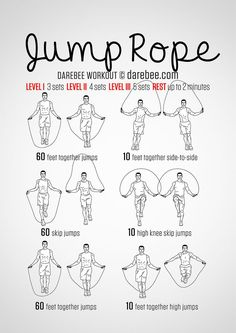

Chevron
- 6 Cardio Übungen für zu Hause - Gymondo
- Ausdauertraining für Zuhause: 20 Übungen ohne Geräte
01.05.2020 — - 20 Cardio übungen-Ideen | fitness workouts, fitnessübungen .
- Für diese 5 Cardio-Übungen brauchst du kein Zubehör
- Cardio Training: Vorteile, Methoden und Herzfrequenz
- Abnehmen: Diese 5 Cardio-Übungen verbrennen noch mehr .
- Probiere die 5 besten Cardio-Übungen im Fitnessstudio aus .
- 10 Übungen für das perfekte Cardio Training zuhause
- Cardio-Training zu Hause - Uebungen.ws
- Besser als Laufen: 5 Cardio-Übungen, um mehr Kalorien zu .
Mode Body & Care Mobility Tech Business Lifestyle Entertainment Uhren Trend-Radar Abo Edition Germany Germany
© Getty Images
Body & Care
Besser als Joggen: 5 Cardio-Übungen, um mehr Kalorien zu verbrennen
Von Paloma González 11. November 2020Langweilt Sie das Laufen? Wir haben Neuigkeiten: es ist nicht die beste Übung, die man machen kann, um mehr Kalorien zu verbrennen.
Das Laufen ist kostenlos, ein komplettes Cardio-Training und ein guter Sport, um im Alltag mehr Kalorien zu verbrennen . Aber ist es wirklich die beste Option für diejenigen, die ein paar Kilo verlieren wollen?
Laufen ist einfach, man braucht keine spezielle Ausrüstung, man kann es überall und zu jeder Tageszeit tun, solange man gute Turnschuhe hat (und ja, man braucht spezielle Turnschuhe zum Laufen, sonst zerstört man sich die Füße). Aus diesen Gründen ist Laufen ein sehr populärer Sport, vor allem für Menschen, die zu viel gegessen haben und das zusätzliche Gewicht wieder verlieren wollen. (Lesen Sie hier: 5 Süßigkeiten, die laut Experten sogar beim Training helfen )
Es funktioniert auch – das wurde immer und immer wieder bewiesen. Aber es hat sich auch gezeigt, dass es beim Ausdauertraining andere Methoden gibt, die vielleicht effektiver sind und es schaffen, viel mehr Kalorien zu verbrennen, ohne viel Zeit mit dem Training verbringen zu müssen.
Ist Laufen der beste Sport, um Gewicht zu verlieren?
Kombinieren Sie kurze Läufe und Spaziergänge mit Seilspringen – so können Sie bis zu 1000 Kalorien pro Stunde verbrennen
© Getty Images
Der große Vorteil des Laufens besteht darin, dass Sie nur ein Bein vor dem anderen bewegen müssen, Sie können eine Strecke wählen, die Ihnen gefällt, und sie die Lieblings-Playlist laufen lasen (so dass Sie sich wie im Rocky Training fühlen). Aber wenn Sie daran interessiert sind, zu sehen, wie sich die Anzahl der verbrannten Kalorien mit jedem Schritt erhöht, dann ist es an der Zeit, nach anderen Optionen zu suchen. (Auch interessant: Bauchfett – Warum es sich bildet und 5 Übungen, um es schnell zu reduzieren )
Wenn Sie laufen, um gesund zu sein, sich zu entspannen oder für ein paar Minuten aus Ihrem Haus zu fliehen, dann laufen Sie weiter. Aber wenn Sie nach einer schnelleren Methode suchen, Gewicht zu verlieren, dann berücksichtigen Sie, dass Experten fünf Übungen empfehlen, die Ihren Stoffwechsel viel besser beschleunigen und Kalorien in kürzerer Zeit vernichten.
Trainiert gleichzeitig neun Muskelgruppen und das sogar im Sitzen: Rudern
© Getty Images
Diese 5 Cardio-Übungen verbrennen mehr Kalorien als Laufen
1. Springseil springen
Es hat bei Michael B. Jordan bei Creed funktioniert – und es wird auch bei Ihnen funktionieren. Den Experten zufolge können beim Seilspringen bis zu 1000 Kalorien pro Stunde verbrannt werden, abhängig von der Geschwindigkeit der Sprünge und Ihrem Körpergewicht (Menschen mit einem höheren Körpergewicht neigen dazu, mehr Kalorien zu verbrennen).
Und Sie müssen es nicht eine ganze Stunde lang machen: Ein paar Minuten reichen aus, um Ihr Herz in Schwung zu bringen. Die beste Option ist es, Sprünge als Intervalltraining zu machen, was im Grunde genommen bedeutet, einige Minuten lang zu springen und dann 30 bis 60 Sekunden später mit einem kurzen Spaziergang fortfahren – und diese Doppelübung so oft wie möglich zu wiederholen.
2. Schwimmen
Schwimmen ist ein Training mit geringer Belastung für Ihre Knie und Gelenke und sehr effektiv bei der Verbrennung von Kalorien. Es ist gleichzeitig ein Ganzkörpertraining, verbessert die Ausdauer und hat erwiesenermaßen auch Vorteile für die psychische Gesundheit. Wenn man eine Stunde lang kräftig schwimmt, kann man fast 1000 Kalorien verbrennen.
3. Radfahren
Radfahren ist gut für Herz, Lunge und Blutgefäße – und selbst ein leichtes Training kann über 300 Kalorien pro Stunde verbrennen. Auf der anderen Seite können intensivere Spinning-Kurse diese Zahl verdoppeln oder verdreifachen, je nach Zeit und Intensität der Übung.
4. Trampolin
Nein, wir sprechen hier nicht vom Kinderspiel. Professionelles Trampolinspringen ist auch ein großartiges Ausdauertraining, das die Knie und Füße nicht so stark beansprucht wie man vermuten würde. Beim Springen wird eine erhebliche Menge an Kalorien verbrannt (etwa 600 pro Stunde) und gleichzeitig arbeiten Sie an Ihrer Muskulatur. (Übrigens: Animal Flow: Mit diesem Training werden Sie zum Muskelpaket – ganz ohne Gewichte )
5. Rudern
Rudergeräte werden in Fitnessstudios immer beliebter, weil es eine sehr effektive Übung ist. Beim Rudern werden ganze neun Hauptmuskelgruppen beansprucht, darunter Kniee, der Quadrizeps, das Gesäß, der Rumpf, der Rücken, die Schulter, der Rücken, der Trizeps und der Bizeps – und es können bis zu 700 Kalorien pro Stunde verbrannt werden.
Der Artikel “5 ejercicios de cardio que queman más calorías que salir a correr” ist im Original auf GQ.com.mx erschienen.
Mehr auf GQ
Corona-Pandemie : Der olympische Schwimmer Michael Gunning über seine Fitness-Routine im Lockdown
Muskelaufbau mit über 40? Mit diesen drei Übungen gelingt es Ihnen
Führt zu viel Sport zu Haarausfall? Ein Arzt klärt auf
Die besten Sportmasken 2020, die Sie jetzt kaufen können
Effektiv zum Erfolg : Mit LISS-Training sehen Sie schnell Erfolge auf der Waage
Fitnessübung Abnehmen Muskelaufbau Sixpack Gut zu wissenGQ Lese-Empfehlungen
Fitness
Sixpack: Mit diesen 5 Übungen klappt es garantiert Von GQ.de 3. Mai 2021Work-out-Kicks
Nano X1: Der Crossfit-Schuh von Reebok ist jetzt vegan Von Cordula Funke 15. April 2021 Edition Germany AD Glamour GQ Vogue AGB Impressum Jobs Werbung buchen Newsletter Abo Datenschutz Cookie verwalten2021 Condé Nast Germany


Mauris vulputate dolor
Rutrum fermentum nibh in augue praesent urna congue rutrum.
Etiam posuere